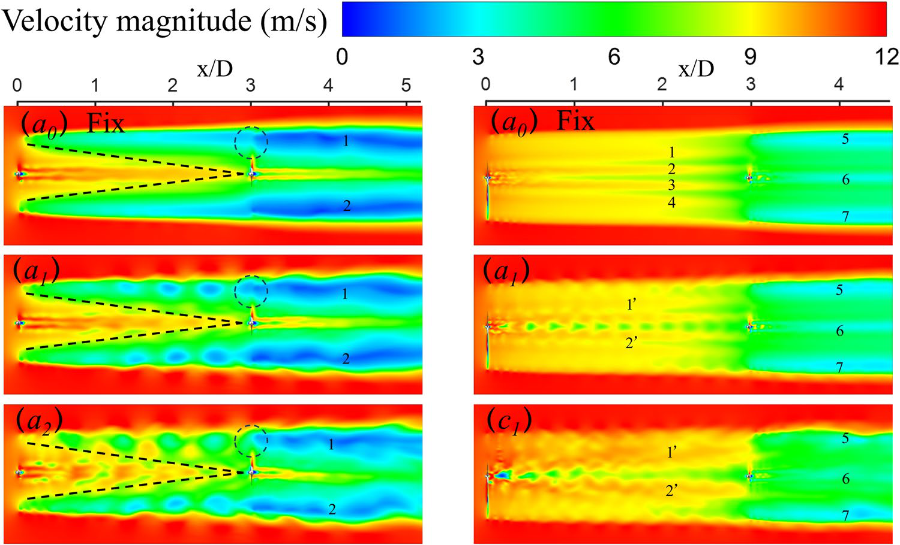

Computational Analysis of Tandem Floating Wind Turbines under Coupled Pitch-Surge Motion




Overview
This study performs blade-resolved CFD analysis of tandem floating offshore wind turbines, comparing the NREL 5 MW and IEA 22 MW reference turbines when the upstream turbine undergoes coupled in-phase pitch-surge motion.
Computational Model
The work uses full-scale blade-resolved RANS simulations with the SST k-ω turbulence model and overset meshes. Tandem turbines are placed three rotor diameters apart, and three pitch amplitudes and three surge amplitudes are evaluated.
Aerodynamic Response
Increasing pitch-surge amplitudes suppresses the mean thrust of the upstream turbines but increases thrust for the stationary downstream turbines. The upstream IEA 22 MW turbine shows increased mean power at larger motion amplitudes, despite transient negative power during portions of the cycle.
Dynamic Stall and Wake Physics
The IEA 22 MW turbine experiences stronger and more prolonged dynamic stall than the NREL 5 MW turbine, particularly near the blade tip. Larger motion amplitudes also enhance wake velocity recovery, alter turbulent kinetic energy, and change vortex-ring formation and breakdown.